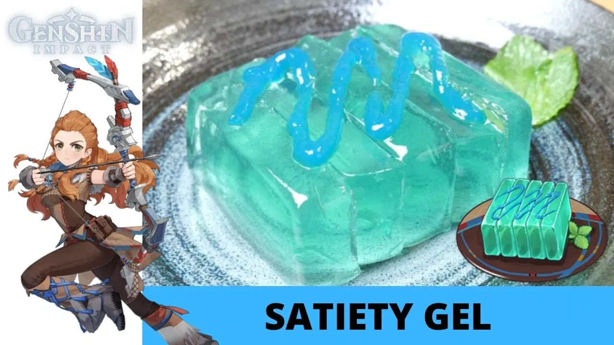

Home
Satiety Gel

Description
Aloy's specialty. The cross-section looks perfect, its shape is regular, and it gives off a cool air. At first, Aloy seemed a bit apprehensive as to whether you'd enjoy this rather unique dessert, but she was relieved when you wolfed it all down in one go...
Ingredients
Mint Jelly
- 50g Mint
- 1L Water
- 1 Cup Sugar
- 2 Drops Blue Food Coloring
- 2 Tbsp Geling Powder + 125ml Water
Blue Gel
- 1/2 Cup Water
- 1/2 Cup Corn Syrup
- 2 Tbsp Cornstarch
- Blue Food Coloring
Steps
Mint Jelly
- Pick 50g of mint leaves and place into 1.5L of Water. Bring to a boil. After boiling, take pot off heat and let the leaves steep for atleast 15 minutes.
- Strain water and extract mint leaves. Place mint water (tea) back onto stove and put in 1 Cup of Sugar. On low heat, stir until sugar is dissolved.
- Add 4 drops of blue food coloring and stir.
- Combine 125ml of water and Geling Powder and stir. While the mint tea is still hot, combine it with the Geling Powder mix with it. (Make sure the water doesn't boil or the gelatin may not activate.)
- Portion mint water (tea) and place into molds. Put mold into refrigerator and let it set for at least 6 hours.
- When the gelatin has set, place mold into hot water for 10 seconds depending on heat, to melt the outer layer of the jelly. This will release the jelly. Place plate ontop of the mold and then flip.
Blue Gel
- Combine Water and Cornstarch and stir to create a slurry.
- In a pot, combine Corn Syrup and Cornstarch Slurry and stir.
- Add blue food coloring and bring to a simmer.